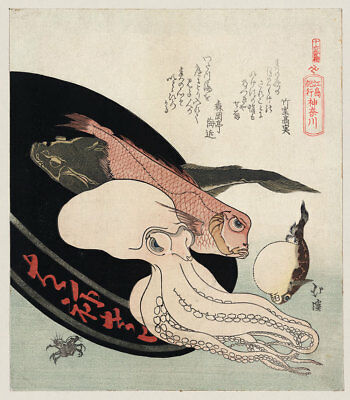

Not only Japanese artists depicted Ukiyo-e. Many foreign artists were also fascinated by Ukiyo-e. The painting on the left was created by Paul Jacoulet (1896–1960), a French, Japan-based woodblock print artist known for a style that mixed the traditional ukiyo-e style and techniques developed by the artist himself.
As the interpretation suggest, Ukiyo-e stands for "the pictures of the floating world. The style of Ukiyo-e with its delicate lines is perfect for subjects Japanese literature, art history, religion, and mythology. And it is often to see how even Eastern culture and mythology can be well incorporated into a Ukiyo-e painting.
Yūrei-zu are also a famous genre that portray images of ghosts, demons and other supernatural beings. They are considered to be a subgenre of fūzokuga, "pictures of manners and customs." These types of art works reached the peak of their popularity in Japan in the mid- to late 19th century. And this style has also influenced the Japanese horro comics which are very famous until now.
Animals are also a commonn actegory for the paintings and prints and they often come with some metaphors with Japanese traditional culture. Intrestingly, they are sometimes delineated with human features in a very lovely way.
